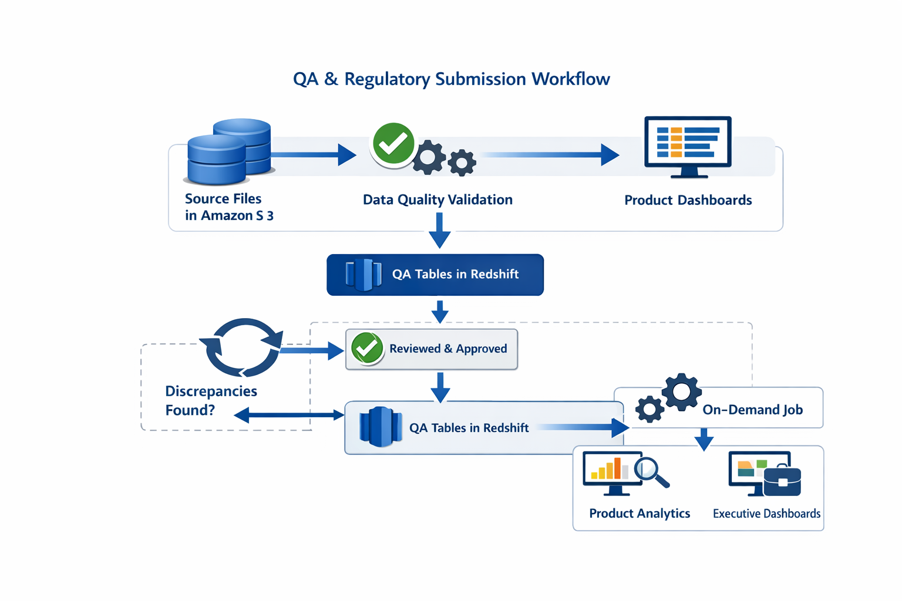

Regulatory reporting (APRA) and data analytics platform for superannuation & financial services.
CONTEXT
Delivered a regulatory‑grade reporting platform for a financial services organisation spanning superannuation, life insurance, and banking. The solution enables repeatable APRA submissions by consolidating product holdings across source systems, enforcing master data governance, and operationalising end‑to‑end QA and sign‑off workflows.
DISCOVERY & FEASIBILITY
Led feasibility and current‑state assessment across infrastructure, data flows, and product reporting processes. Identified source‑system variance, reconciliation pain points, and control gaps; then defined a pragmatic target architecture focused on auditability, traceability, and operational resilience.
TARGET ARCHITECTURE
Implemented a metadata‑driven pipeline: raw source files land in Amazon S3, while file lineage, processing status, and validation outcomes are persisted in Amazon Redshift metadata tables. Native Python validation reconciles source data against governed master data in Profisee to standardise product holdings and reduce duplication before downstream consumption.
ORCHESTRATION & ENGINEERING
All processing is orchestrated with Apache Airflow, enabling dependency management, retries, parameterised reruns, and operational visibility. Code is versioned in GitLab with repeatable jobs supporting both scheduled ingestion and on‑demand regulatory production cycles.
DATA QUALITY, CONTROLS & GOVERNANCE
Established data quality gates prior to consumption: only files that pass conformance and reconciliation checks are loaded into QA tables (Redshift). These QA tables feed product‑specific dashboards, enabling Product Owners to verify figures against domain expectations before approval. Any discrepancies trigger controlled re‑processing and re‑validation until the dataset is signed off.
QA & REGULATORY SUBMISSION WORKFLOW
Following product sign‑off, an on‑demand Airflow job generates the APRA submission pack in the required Excel formats for regulatory lodgement. In parallel, approved datasets are promoted to curated reporting layer tables used by Product and Actuarial teams, with Executive dashboards consuming the same governed outputs to maintain consistency between regulatory and management reporting.
REGULATORY OUTPUTS
Automated production of APRA returns including 606, 611, and 550 series, significantly reducing manual effort and cycle time while improving repeatability, evidence, and traceability for audit and compliance.
REPORTING & TRANSPARENCY
Delivered self‑serve Power BI dashboards for product QA and operational tracking, improving stakeholder transparency and trust in the transformation process. Executive reporting is powered from the same reporting layer to ensure a single, governed version of the truth.
MEASURABLE IMPACT
- Automated ingestion from S3 to Redshift using Airflow, streamlining data transfer and repeatability.
- Improved pipeline efficiency and accuracy through Python, SQL, and orchestration best practices.
- Automated APRA report production (606, 611, 550 series) in required Excel formats, reducing production effort and time.
- Integrated Profisee MDM controls, improving data accuracy by ~35% and reducing duplication by ~30%.
- Reduced time required for document retrieval and QA cycles, saving ~2 days for analysts and testers.
- Improved stakeholder transparency and trust through product QA dashboards and executive reporting alignment.
TECHNOLOGY STACK
- Languages: Python, SQL
- Orchestration: Apache Airflow
- Storage: Amazon S3
- Warehouse: Amazon Redshift (metadata tables, QA tables, reporting layer)
- Data Governance / MDM: Profisee
- Version Control: GitLab
- Dashboards: Power BI

High level Architecture
QA Sign-off Loop and APRA Submission Workflow